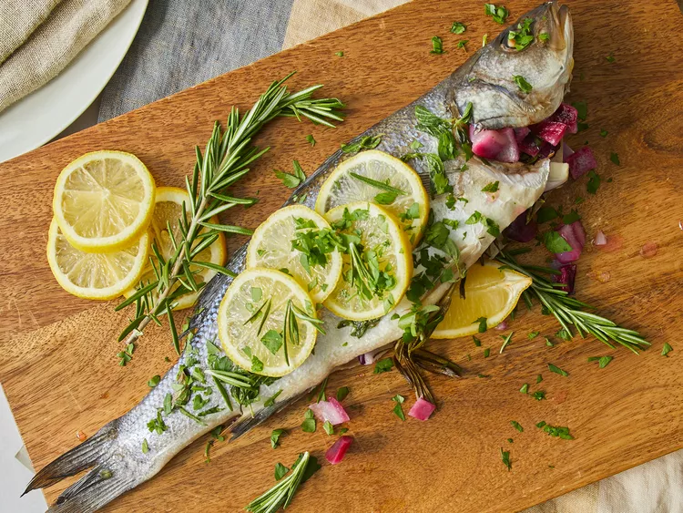

Branzino Mediterranean

Description
Branzino, also known as European sea bass, is a delicious white fish with a mild flavor. I like to cook them whole, stuffed with lemon wedges, fresh oregano, and rosemary before roasting them for an easy dinner full of Greek flavor.
Ingredients
- 2 tablespoons olive oil, divided
- 1 red onion, chopped
- salt and ground black pepper to taste
- 2 whole Branzino (sea bass) fish, cleaned
- 4 lemon wedges, divided
- 2 sprigs fresh rosemary
- ½ cup white wine
- ¼ cup lemon juice
- 1 tablespoon fresh oregano leaves
- ¼ cup chopped Italian flat-leaf parsley
Steps
- Preheat the oven to 325 degrees F (165 degrees C).
- Drizzle 1 tablespoon olive oil into a large baking pan; add red onion and season with salt and pepper.
- Place 2 whole branzino fish into the baking pan. Stuff each cavity with 1 lemon wedge, 1 rosemary sprig, and some of the red onion in the pan. Pour white wine and lemon juice over fish and sprinkle with oregano. Drizzle remaining 1 tablespoon olive oil over fish.
- Bake in the preheated oven until fish is opaque and flakes easily with a fork, about 25 minutes.
- Gently slide a spatula between the bones to separate fish; remove all the bones. Serve fish on a platter; garnish with parsley and 2 lemon wedges.
Home